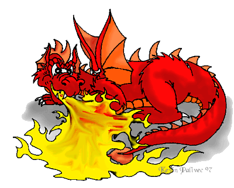
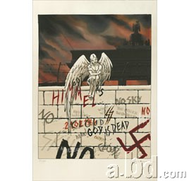

Forums galactiques > Assemblée Galactique : diplomatie officielle > Terrain d'entente ??
| gOlstein Respect diplomatique : 413  18/02 ETU 00:48 | Score : 0 Détails L'Empire Ultrémiste déplore le manque de propositions de la part de l'AST dans les négociations et les refus systématiques d'Alphonse Hubert de nos propositions.
| ||
| AlphonseHubert Respect diplomatique : 690  18/02 ETU 00:49  | Score : 0 Détails AlphonseHubert fait des propositions concrètes, auxquelles vous ne daignez pas répondre.
La médiation a été créée pour qu'on y discute, alors discutons là-bas, si vous le voulez bien. | ||
| titan14 Respect diplomatique : 187  18/02 ETU 17:39 | Score : 1 Détails Ainsi que je l'ai dit dans ce même topic (et sans concertation préalable avec Alphonse, donc au nom de la liberté d'expression de tout un chacun) il me paraît fondamental que le projet d'accord soit soumis à l'approbation de tous (c'est que l'on appelle la démocratie) avant une entrée en vigueur
Que l'on soit coalisé ou non, tout le monde doit pouvoir voter (nous avons assister à cette assemblée à des votes bien moins utiles)et ainsi s'exprimer s'il le souhaite Ce vote aura aussi pour conséquence d'éviter que des contestations (ou divergences d'interprétation) puissent ensuite être initiées par certains contestataires (ou chiquaneurs) professionnels Ils se reconnaîtront je pense Salutations galactico systémiques | ||
| ERLORAK Respect diplomatique : 243  18/02 ETU 22:01 | Score : 0 Détails J'ai entendu parlé d'un don de 20 000 000 000 de leems à Dieu de la part de Mac polar et gOlstein, mais gOlstein étant + de deux fois plus riche que Mac Polar, ne serait-ce pas mieux de faire 90% de leur fortune?
| ||
| wima Respect diplomatique : 402  18/02 ETU 22:04 | Score : 0 Détails Nous, représentants de l'AST au CLC, essayons de promouvoir un don qui amènerait les Commandants MacPolar et gOlstein à la même somme. Sans quoi, l'euphorie spéculative reprendrait le dessus et la course à l'armement reprendrait inévitablement.
Cependant, le compromis est difficile à trouver car le Commandant gOlstein tient à sa fortune, et je peux le concevoir. Respectueusement, Wima | ||
| yable Respect diplomatique : 250  18/02 ETU 22:50 | Score : 1 Détails En même temps, Mac Polar diffuse une partie de sa fortune au sein de l'AST, et par conséquent, la controle encore en partie, même s'il ne la possède plus directement.
Donc en ce qui concerne une égalité pure et dure, je ne sais pas si faire en sorte que les fortunes soient équivalentes est la meilleure solution. D'un autre côté, peut être Golstein fait il la même chose avec les ultrèmes, mais je pense que c'est moins généralisé. | ||
| wima Respect diplomatique : 402 18/02 ETU 23:01 | Score : 0 Détails Commandant Yable,
Votre réponse est tout à fait juste et c'est pour cela qu'AlphonseHubert a proposé que la fortune des membres de l'AST mais aussi des Ultrèmes soit plafonnée. Ainsi, pas de risque de dons et pas de risque de fraude fiscale (bon, pour les kamis et les vaisseaux de commerce, nous n'avons pas encore la solution). Mais je ne l'avais pas mentionné, au temps pour moi. Respectueusement, Wima | ||
| Largo Respect diplomatique : 442  18/02 ETU 23:48 | Score : 0 Détails Je comparerais ces discussions aux négociations que la planète Terre a connu au milieu du XXème siècle de l'ère préhistorique. A cette époque, deux blocs s'opposaient, un peu comme aujourd'hui et il y avait bien sûr quelques indépendants. Les deux blocs ont alors négocié pour se désarmer mutuellement et tenter d'éviter de vivre dans la peur d'être attaqué. Vous connaissez la suite. L'un des deux blocs s'est effondré et l'autre est resté seul en place.
Cordialement, commandant Largo, Hydropate. | ||
| Rudzain Respect diplomatique : 45 19/02 ETU 00:18 | Score : -3 Détails Sauf que l'un des blocs s'est effondré parce que ils avaient plus ou moins relancés les hostilités...
Ce n'est pas un très bon exemple. | ||
| Shoubenigourath Respect diplomatique : 119  19/02 ETU 00:19 | Score : -4 Détails Faux, Rudzain.
| ||
| Rudzain Respect diplomatique : 45 19/02 ETU 00:23 | Score : -2 Détails Vous n'allez quand même pas me dire que le bloc qui s'est effondré a disparu parce que les deux blocs avaient signés des traités ??
Ce bloc s'est effondré parce que les deux avaient relancés les hostilités, notamment au niveau technologique. | ||
| Shoubenigourath Respect diplomatique : 119 19/02 ETU 00:25 | Score : -3 Détails Le bloc communiste ne s'est pas effondré parcequ'il avait relancé les hostilité.
Il s'est effondré car il était battis sur une mauvaise vision du monde : une vision destructrice, impéraliste, totalitaire qui ne pouvait marcher dans un monde de paix et de liberté. Le parallélle est frappant... | ||
| Rudzain Respect diplomatique : 45 19/02 ETU 00:27 | Score : -3 Détails Ah il y avait de ça aussi c'est sûr, mais sans cette pression de l'autre bloc ça aurait pu durer des dizaines d'années supplémentaires, voir plus...
| ||
| chreugoat Respect diplomatique : -11  19/02 ETU 11:50 | Score : -3 Détails Shoubi: " c'est pas faut" cela signifit que tu ne comprend pas?
Plus sérieusement,il faut toujours garder espoir en la commnunisme. L'éffondrement de votre bloc de l'est, a la fin du XX siecle préhistrique, et lieu car il était: impérialiste ( plus représentatif a mon avis de bloc de l'est), totalitaire (qui avait mis en place les plus grandes dictatures, par exemple en Amérique du sud, ou en Irak? le bloc de l'est), destructrice (chomage de masse, dissentions sociales, guerres a tout vas, sont le lot quotidien du bloc de l'ouest). Donc effondrement a cause de l'autre bloc. De plus bien que le bloc de l'est n'existe plus, le monde communiste existait encore a l'aube du XXI siecle, avec la chine et autre pays asiatiques (vietnam, corée du nord) ainsi que Cuba, sans compter les mouvements en tous genres et la reviviscence du communisme dans les pays du bloc de l'Est (c'était mieux avant, au moins on mangait et on avais un boulot, mais la, on n'est plus compétitif.. alors, on ne peut rien faire). Deplus a cette meme période,1.5 milliard d'ames sont encores sous un régime communisme, contre a peine 2 milliards avant l'éffondrement du bloc de l'est, ci qui ramené a la faible population de l'époque est énorme. Pour revenir au sujet, on ne peut rien faire sans concessions, a moins de détruire totalement l'autre. Encore une fois choisissez la voie du milieu pour le bien de tous, voie peut etre instable, mais elle a le mérite d'etre celle prometant un avenir vivant. |
Forums galactiques > Assemblée Galactique : diplomatie officielle > Terrain d'entente ??